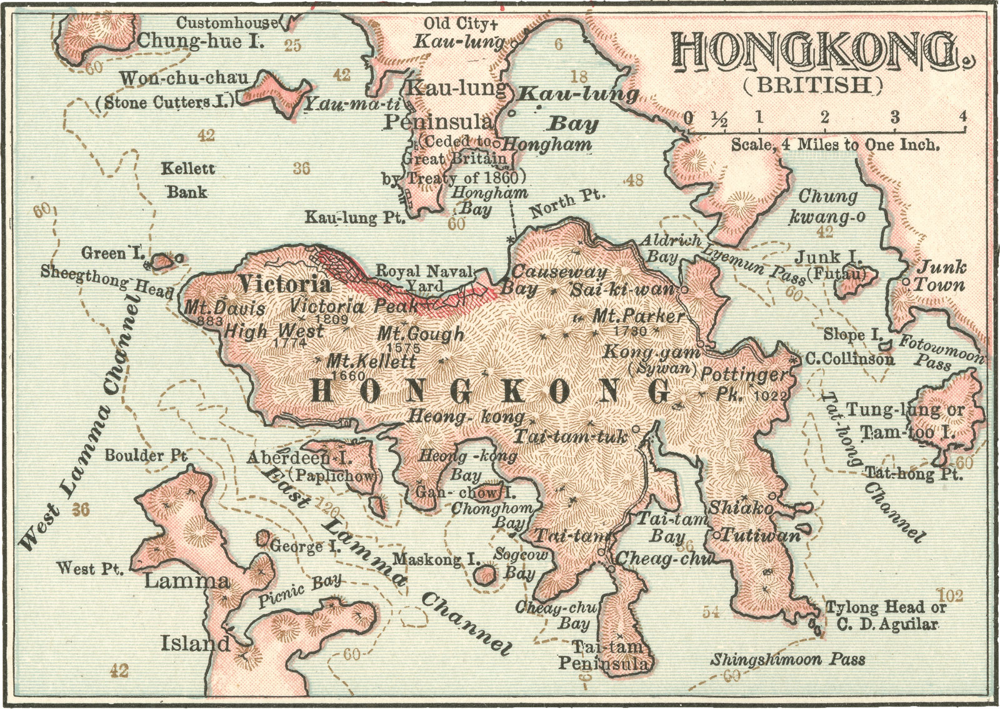
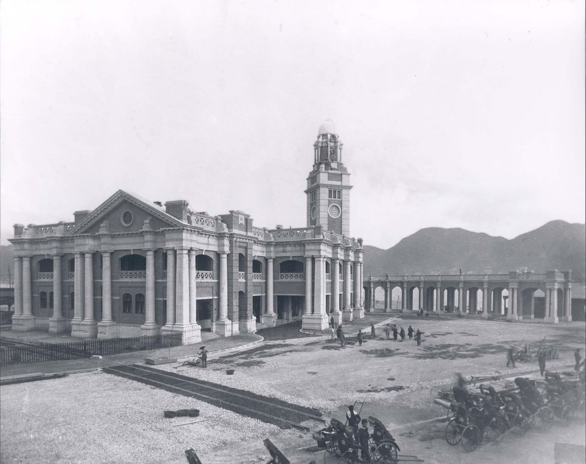
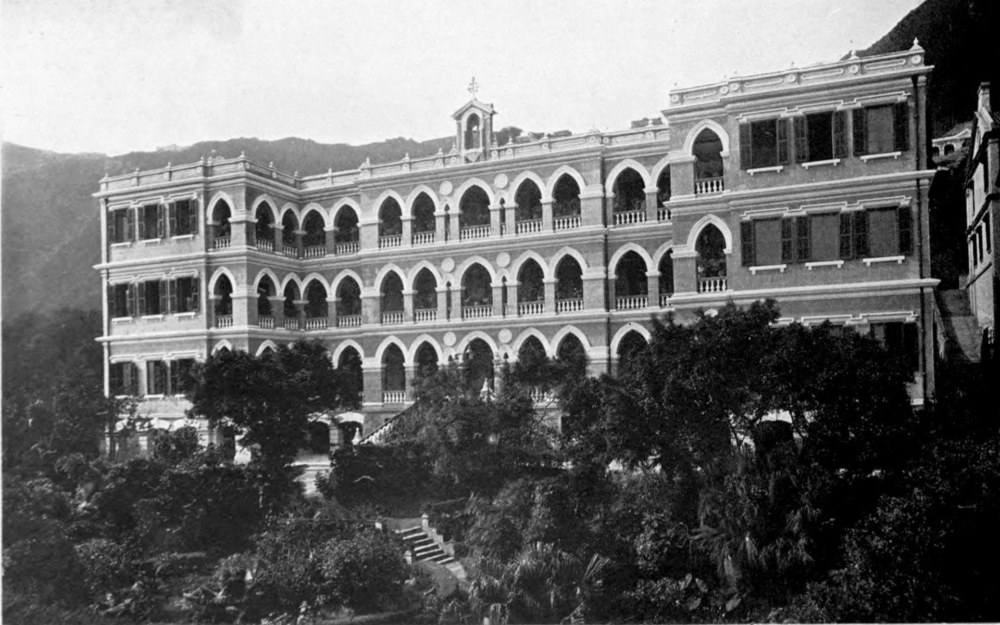
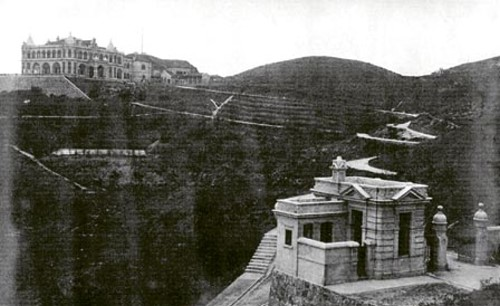
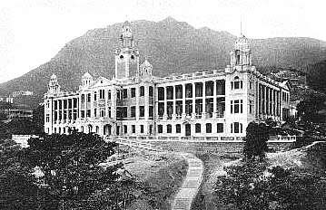
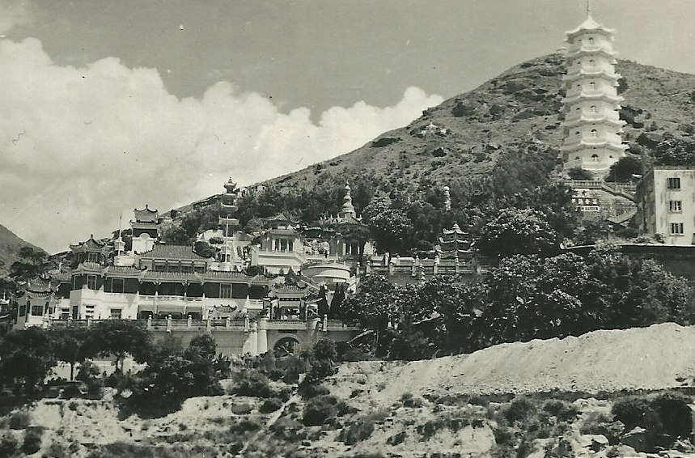
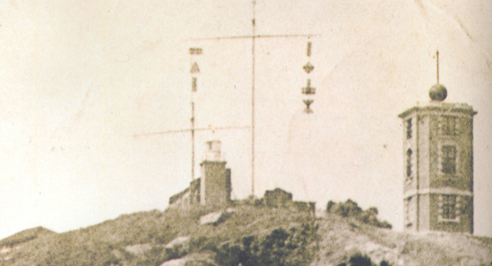

Old Hong Kong vs. New Hong Kong

Old Central Market vs. New Central Market
The Taiping Rebellion in China brought many Chinese to escape to Hong Kong, creating a strong demand for a new market. The 4th Generation Central Market was built in 1939, a four-story Modern styled building of the time. It had a total of 255 market stalls and an open Atrium at the center of the building. A lot of Central Market was demolished or converted to form other public utilities. In 2009, Central Market was announced to be removed from the Land Application List and handed over to the Urban Renewal Authority for conservation and revitalization. In 2021. Central Market reopened with a new look, fully renovated.

Old Clock Tower Area vs. New Clock Tower Area
Kowloon-Canton Railway was planned in 1904 with its terminus in Tsim Sha Tsui. The construction of the station began in 1913. Part of the station, including the Clock Tower, was completed in 1915. Finally, the whole station was opened in 1916. The station building was demolished in 1977. However, as a compromise, it was decided that the Clock Tower was to be preserved. In 1990, the clock tower was declared as a monument under the Antiquities and Monuments Ordinance. On 9 December 2021, the use of the clock tower's bell chimes was resumed, ringing hourly between 8 am to midnight.

Old British Military Hospital vs. New British Military Hospital
A hospital used for the British garrison, the British Military Hospital was created in 1903, officially opening in 1907. A 150-bed hospital consisting of two blocks with 3 stories was also used to treat prisoners of war during the Japanese occupation until 1967 where it was turned over to the colonial government. In 1967, a new 15 story British Military Hospital was also opened on Wylie Road in the King's park area. The hospital was eventually closed in 1996 until it was turned over to the Philippine Consulate General as a refuge for dismissed domestic workers. Today however, the site is now a private housing estate.

Old St. Joseph's College vs. New St. Joseph's College
Originally a portuguese commercial school, St. Joseph's college was located on Pottinger street owned by Father Timoleon Raimondi, a prestigious bishop of the colony. In 1875 however, a group of Christian brothers known as the De La Salle brothers arrived in Hong Kong to rename the school to Saint Joseph. Additional wings were added in 1901 until the Robinson Road campus was damaged during a 1918 earthquake. In 1941, the school was also used as a clinical depot for the Japanese army during their occupation until classes resumed 4 years later, allowing it to become the school we know today.

Old Gate Lodge vs. New Gate Lodge
Located at Mount Austin Road on Victoria Peak, Gate Lodge was built between 1900 and 1902. It was a part of a complex known as Mountain Lodge, which was home to the governor of Hong Kong. However, the main building was demolished in 1946 leaving the Gate Lodge to become a public gallery.

Old Hong Kong University vs. New Hong Kong University
The University of Hong Kong was founded in 1911 as Governor Sir Frederick Lugard had proposed to establish a university in Hong Kong to compete with universities in China. After 1925, the government integrated more Eastern culture into the university. After the Second World War, the university reopened and investment increased as post-war reconstruction efforts began. By 2001, the number of students had grown to 14,300 and the number of degree courses to more than 100. From 2010 to 2012, the university celebrated its 100th anniversary as it opened the Centennial Campus in Pok Fu Lam.

Old Tiger Balm Garden vs. New Tiger Balm Garden
In 1935, Burmese Chinese entrepreneur and philanthropist (also the founder of tiger balm) Aw Boon Haw created the Haw Par Mansion landscaped garden at a price of 16 million HKD. Opening to the public in the 1950s, the garden underwent multiple changes over time, including a short period where it's statues were replaced with amusement park rides. In the 2000s, the garden was eventually demolished for redevelopment with many of the garden's statues being salvaged, allowing it to become the Haw Par Mansion we know today.

Old Blackhead Point vs. New Blackhead Point
Originally a cape located in Tsim Sha Tsui, Blackhead point is named after German businessman Friedrich Johan Berthold Schwarzkopf. Although it remains a small hill, it contains the Signal Hill tower, a three storey building used as a time ball apparatus for the Hong Kong Observatory which used to be located in the nearby Marine Police Headquarters Compound. The apparatus was used from 1908 to 1933 before being used as an ammunition store during World War 2 until becoming the historical landmark we know today.
Sources of Images
https://www.spacious.hk/en/blog/the-disappearing-buildings-in-hong-kong-vi-92-year-old-chinese-tenement-stays-sturdy-after-truck-crash
https://www.britannica.com/place/Hong-Kong-Island
https://en.wikipedia.org/wiki/British_Military_Hospital,_Hong_Kong
https://www.centralmarket.hk/en/history-timeline
https://en.wikipedia.org/wiki/Clock_Tower,_Hong_Kong
https://en.wikipedia.org/wiki/St_Joseph's_College%2C_Hong_Kong
https://en.wikipedia.org/wiki/Gate_Lodge
https://en.wikipedia.org/wiki/University_of_Hong_Kong
https://en.wikipedia.org/wiki/Tiger_Balm_Garden_(Hong_Kong)
https://www.cardcow.com/306792/hong-kong-tiger-balm-garden-china/
https://en.wikipedia.org/wiki/Blackhead_Point